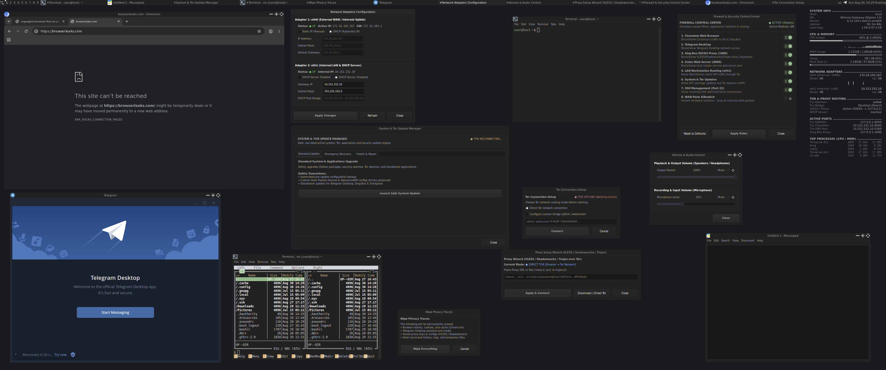
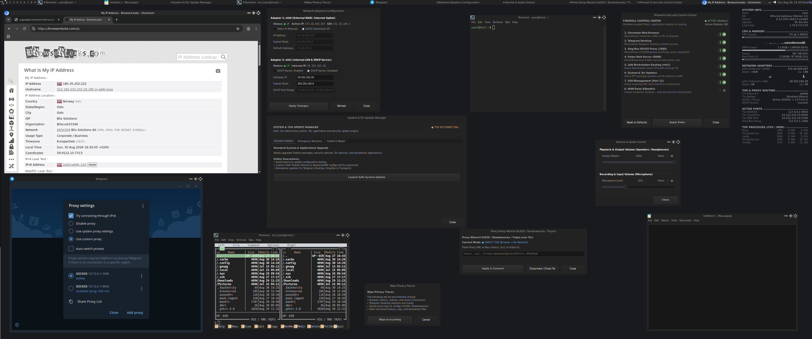

▪ 使命宣言与系统宗旨 (Mission Statement)
理念与使命
零遥测 • 抗 DPI 审查 • 强化安全网关
为什么创建 Dark Gateway OS？
现代互联网充斥着深度数据包检测（DPI）、严苛的网络审查、浏览器指纹追踪及运营商级去匿名化。Dark Gateway OS 扮演着坚不可摧的安全网关角色，负责处理所有加密、路由和过滤工作，同时使客户端工作站与外界威胁完全隔离。
🛡️
零泄漏绝对隔离
客户端工作站上的任何应用程序都无法获取主机的真实 IP、MAC 地址或实际地理位置。
⚡
深度抗 DPI 审查
WebTunnel（HTTPS 伪装）与 VLESS Reality 技术可轻松突破最严格的企业级和国家级防火墙。
🚫
纯净出口免 Captcha
通过私有专用出口节点路由，彻底摆脱 Cloudflare 和 Google Captcha 的频繁人机验证困扰。

Dark Gateway OS 桌面全景：原生 C/GTK3 工具群、Conky 遥测 HUD 及 AwesomeWM 平铺式窗口管理器。
▪ 目标受众群体
Dark Gateway OS 适合哪些用户？
01
调查记者、研究人员与活动家
在严密监控环境下与消息来源安全通信、调查敏感信息并发布报道。
02
网络安全专家与 OSINT 分析师
在完全隔离的环境中分析恶意软件和调查威胁，绝不泄露真实基础设施。
03
身处高强度网络审查地区的用户
当常规 VPN 和公共 Tor 节点被封锁时，保持稳定访问自由开放的互联网。
04
开发者与系统管理员
为虚拟测试靶场和实验网络快速搭建安全可靠的匿名网关。

零泄漏验证：BrowserLeaks 测试、Telegram SOCKS5 :1080 活跃通道及 Conky HUD。准备好部署自主安全网关了吗？
下载预配置好的 OVA 虚拟设备镜像，并查阅详尽的用户手册。